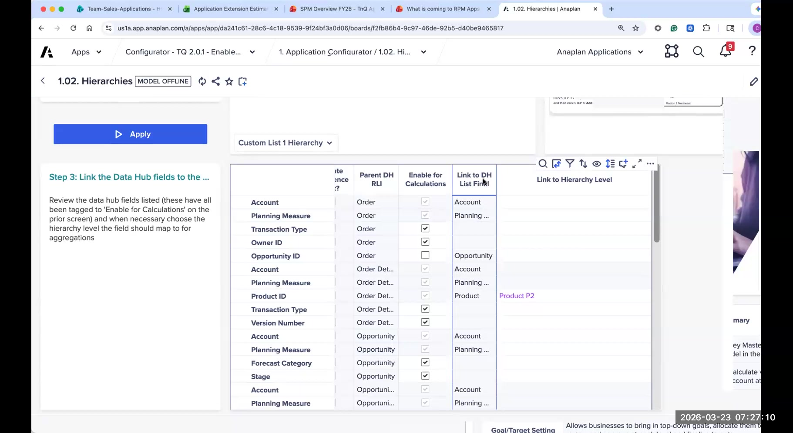
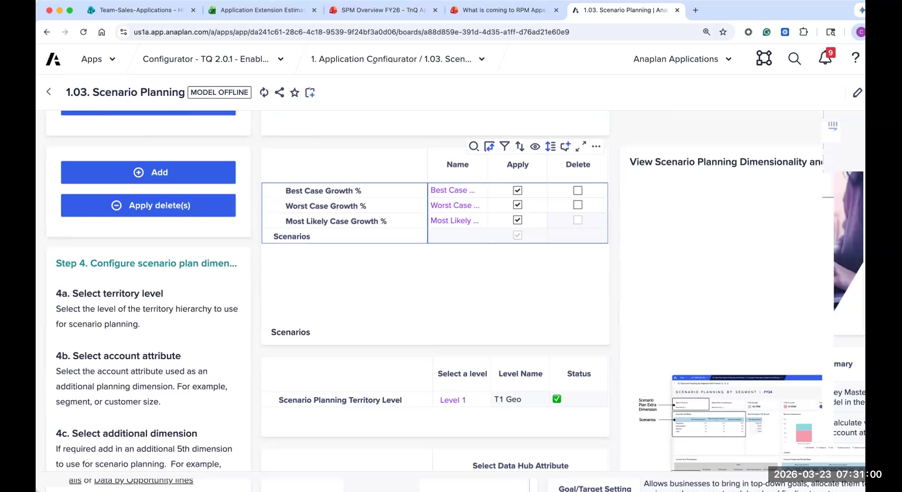
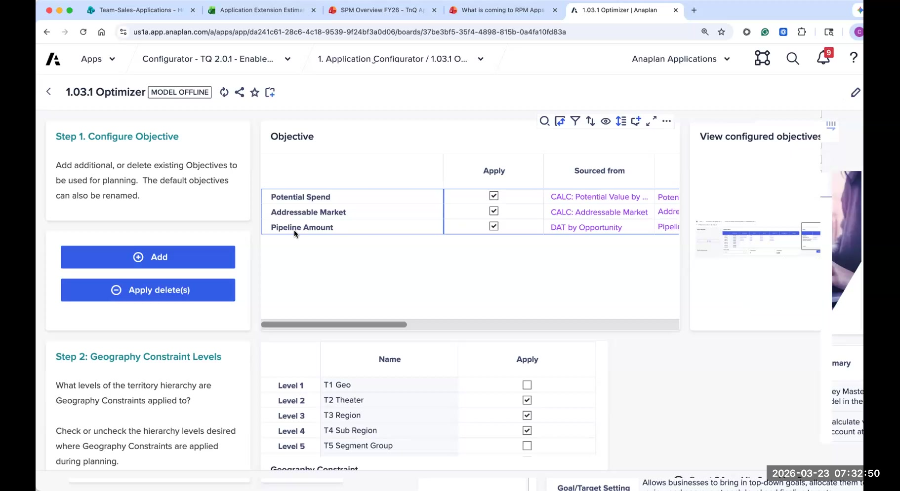
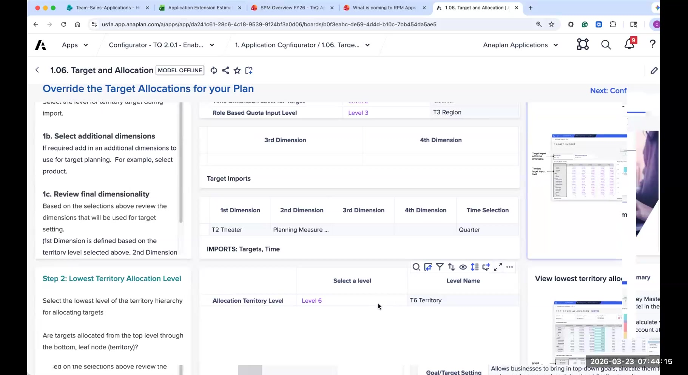
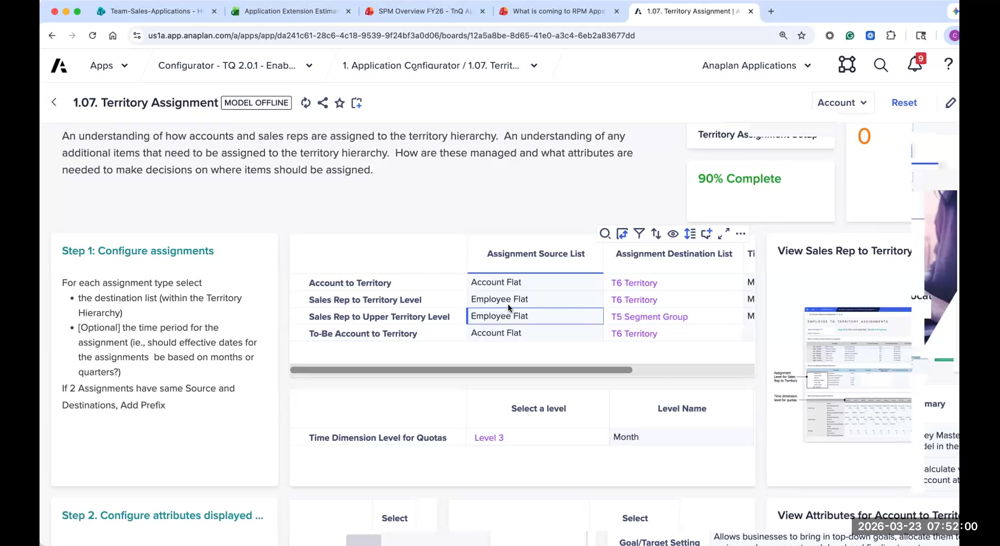
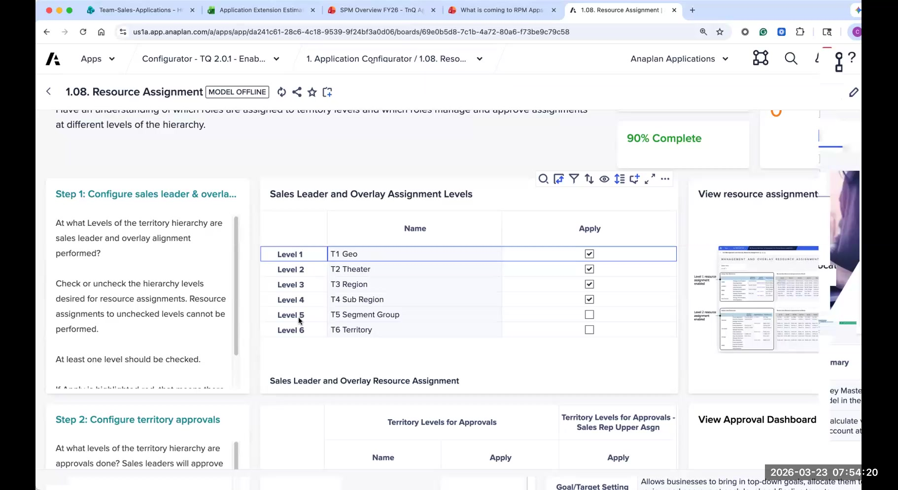
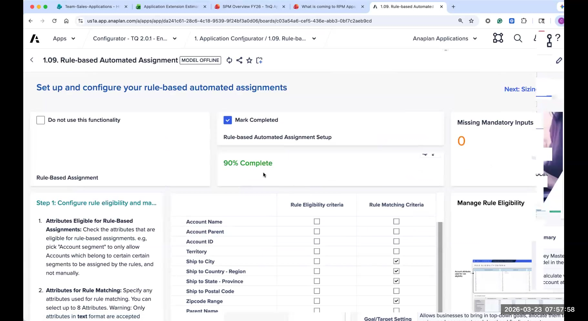

Configurator Review
Page-by-page walkthrough of the T&Q Configurator - pages 1.00 through 1.09
The T&Q Configurator is a specialized Anaplan app that drives the generation of the T&Q spoke application. You work through a series of numbered configuration pages in order, and when complete, the app engineering team triggers generation - producing a fully functional T&Q application pre-configured to your customer's exact specifications.
This section walks through each configurator page in UX order: 1.00 through 1.09. For each page, you will learn what gets configured there, what decisions need to be made, and what pitfalls to watch for. The focus is on the configurator inputs - not on how the generated app works after generation.
Page 1.00 is the entry point into the configurator. It introduces the overall configuration flow, lists the pages you will work through, and provides high-level guidance on the process. Think of it as the configurator's table of contents and checklist rolled into one.
No complex decisions are made here. You will confirm the customer name, verify which modules are in scope (T&Q Planning, SPM Optimizer), and review any pre-configuration notes from the App Engineering team before proceeding.
Always read any instructions or notes on this page before starting. The App Engineering team may have flagged workspace capacity considerations or known issues specific to the version you are working with.
Data Hub Setup is the most important page in the configurator. It defines the data architecture of the entire generated app - which data objects exist, which attributes are tracked, and how customer data maps to Anaplan's data model. Mistakes here are expensive to fix post-generation.
Mapping Customer Data to Anaplan Objects
The configurator presents a set of standard Objects (e.g., Account, Employee, Territory, Opportunity, Opportunity Line) and their associated Attributes (descriptive fields). Your job is to compare the customer's source data against these objects and map accordingly:
- Rename existing attributes to match the customer's terminology - if Anaplan calls it "Account Type" but the customer calls it "Customer Tier," rename it. This keeps the generated app familiar to users.
- Add new attributes at the bottom of the attribute list when the customer has fields that don't match anything in the standard list. Only add what is genuinely needed.
- Verify data format expectations - attributes used in lists or calculations must have clean, consistently formatted values in the source data (e.g., "Enterprise" not "enterprise ", "ENTERPRISE", or "Ent.").
Pre-Implementation Considerations: The Three Booleans
Each attribute has three optional boolean flags. These are not active configurator steps you toggle during a session - they are decisions to make before implementation begins, based on how the customer plans to use each attribute:
- Enable for Calculations - Creates a standalone list from that attribute, making it available for use in formulas and module dimensionality. Enable this if the attribute will be used for filtering, reporting aggregations, or as an analysis dimension.
- Enable for Validation - Checks incoming data imports against existing list values. If a new value arrives that isn't in the list, the import is flagged. Enable this to catch data quality issues at load time.
- Enable for Auto Create - Generates saved views and actions that automatically add new list members when they appear in an import. Enable this if the customer's attribute values change frequently (e.g., new territories, new product lines) and they want the app to self-update rather than requiring manual list maintenance.
Discuss these three booleans with the customer's Sales Ops and IT stakeholders before the configuration session - not during it. Coming in with pre-agreed decisions saves significant time and avoids mid-session debate.
Common Pitfalls
- Order vs. Order Details / Opportunity vs. Opportunity Line - Many customers have only one file when the app expects two (a header record and a detail record). Note: it is perfectly fine if a customer only has one version of the file (e.g., only Order Details / Opportunity Line). In that case, map all relevant attributes into the detail-level object (Order Details or Opportunity Line) and simply ignore the header-level object (Order / Opportunity) - leave it unconfigured. Do not create dummy records to fill the header object. Make sure it's clear which level attributes belong to: line-level fields on the detail object when only one file exists. Duplicate attributes across both levels cause errors at load time.
- Too many attributes - Resist the urge to enable every possible attribute. Each attribute adds size to the Data Hub and slows imports. Only enable attributes the customer will actively use for planning, reporting, or assignment rules.
- Inconsistent values in source data - Attributes enabled for Calculations or Validation require clean, consistent values. Spot-check a sample of the source data before committing to these flags.
Hierarchy Setup defines the structure of all hierarchies in the app - not just the territory hierarchy, but any custom hierarchies added during Data Hub Setup as well (e.g., a product hierarchy, a job family hierarchy). This is where you specify how many levels each hierarchy has and what those levels are named.
Changes made here are automatically reflected across all relevant models within the T&Q application (both the T&Q Planning model and the SPM Optimizer model), ensuring hierarchy consistency throughout the solution.
Key settings on this page:
- Number of hierarchy levels - A hierarchy can have a minimum of 2 levels and a maximum of 10 levels per model. Count levels directly from the customer's data file - not from the org chart.
- Level names - What each tier is called at the customer (e.g., Geo → Area → Region → Sub-Region → Territory). It is recommended to add a level suffix (L1, L2, L3, etc.) to make levels unambiguous in module headers and formulas.
- Attribute mapping - This table is used to validate that any data fields labeled 'Enable for Calculations' that should be linked to a hierarchy have been properly tagged. Note: this is the same table that appears on Page 1.01 and no action is necessarily required if list-formatted items have already been tagged there. Review to confirm - do not duplicate tagging that was already completed in 1.01.
Count hierarchy levels in the actual data file before configuring. It's common for customers to describe a 4-tier hierarchy in a meeting but have 5 tiers when you look at the Territory file. An extra tier adds significant complexity; a missing tier is a structural problem that's very hard to fix post-generation.

Page 1.03 configures two closely related things: how transactional data flows into the app (the source tables, attributes, and time offsets used to calculate actuals and forecasts) and which planning measures the app will track.
Transactional Data Sources
For each data source (e.g., Opportunity Line for actuals, Pipeline for forecast), you specify:
- The source data table and attribute containing the value (e.g., Amount field on Opportunity Line)
- The time scale (monthly, quarterly, annual) and time offset for how dates map to planning periods
- The date field used to place transactions in the right time period (e.g., Close Date)
Planning Measures
Planning measures are the metrics the T&Q app plans against - what reps will be measured and quoted on (e.g., Revenue/ARR, New Logos, Units). For each measure, you configure:
- Measure name and label - use the customer's actual terminology, not generic defaults
- Measure type - currency, count, percentage; this drives formatting and aggregation
- Source attribute - which attribute in the source data calculates actual values and forecast values for this measure
Adding a planning measure post-generation requires significant manual work across dozens of modules and dashboards. If a customer says "we might want a New Logo measure later," add it now - even as inactive. Removing an unused measure is trivial; adding one after generation is expensive.
Each planning measure adds a dimension to the app's core modules. Three measures is manageable; five starts to create performance and usability issues. Push back if a customer wants to plan 6+ measures - ask which ones they'll actually enter data for on day one.

The Optimizer is an optional feature that uses Anaplan's optimization engine to suggest territory carve-outs and account assignments based on defined balance criteria. Page 1.03.1 controls which objectives the optimizer can balance against and how geography constraints are applied.
Key settings on this page:
- Objectives - the metrics the optimizer balances (e.g., Potential Spend, Addressable Market, Pipeline Amount). You can add custom objectives, remove defaults, or rename them to match customer terminology.
- Geography constraint levels - select which levels of the territory hierarchy geography constraints apply to during optimization. Check or uncheck levels as appropriate for the customer's territory model.
- Account attribute for constraints and mix constraints - the account attribute used to enforce balance constraints during the optimization process. The attribute must be enabled for Calculations (set in 1.01) to be available for selection here.
The Optimizer is most valuable for customers with geo-defined territories and a desire to rebalance workload automatically. Customers using named account or relationship-based selling models often find the optimizer less applicable. Confirm the use case is clear before configuring this page.

This section is missing from the current lab guide and must be added. The description below is a placeholder. An SME should review and confirm the exact configuration decisions, table descriptions, and Step labels on this configurator page before this section is finalized.
Page 1.04 configures how historical performance data is structured and surfaced within the generated T&Q application. Decisions here determine the reporting dimensions and data sources available for historical analysis across the territory hierarchy.
- Define the data sources and attributes that populate historical performance reporting
- Configure at which levels of the hierarchy historical data is aggregated and displayed
- Specify which planning measures have historical data available for reporting comparisons

This section is missing from the current lab guide and must be added. The description below is a placeholder. An SME should review and confirm the exact configuration decisions, table descriptions, and Step labels on this configurator page before this section is finalized.
Page 1.05 configures the key performance indicators used to assess and rank account value within the T&Q application. Decisions here determine which metrics are used to evaluate accounts for assignment prioritization, allocation weighting, and planning analysis.
- Define which account-level KPIs are available for assignment and allocation weighting (e.g., Potential Spend, ARR, Pipeline)
- Configure how account value KPIs are calculated and at which dimension level they are aggregated
- Specify which KPIs feed into the Optimizer objectives and allocation method calculations

Target and Allocation configures how Finance targets flow into the app and how they cascade down the territory hierarchy. This is a critical page - the decisions here define the financial planning spine of the entire T&Q app.
Key settings on this page:
- Target cascade starting level - at which level of the territory hierarchy does Finance enter top-down targets? This is typically one of the higher tiers (e.g., Geo or Area level). Targets then cascade down from there.
- Time granularity - at what time dimension level are targets planned and imported? This can be annual, quarterly, or monthly depending on the customer's planning cadence. This setting directly affects the planning modules generated.
- Additional target dimensions - configure any extra dimensions for target setting (e.g., by product, by segment) when the customer plans at a more granular level than territory alone.
- Allocation methods - which methods are available for distributing targets down the hierarchy (e.g., equal split, weighted by actuals, weighted by potential, pipeline-based, manual override).
Every extra dimension (such as product, industry, etc.) increases model complexity. Only add dimensions the customer will genuinely plan against - not dimensions they "might want someday." The more dimensions, the larger and slower the allocation modules become.

Page 1.07 configures how accounts are assigned to territories, how sales reps are assigned to territories, and how first-line managers are assigned. It also defines the time dimension level for quota.
All assignment methods (manual, geographic, rule-based, optimizer) are generated automatically for every customer - you do not choose which methods to enable. What you are configuring on this page is at which level of the territory hierarchy each assignment method operates. This is a fundamentally different question: not "do we have this capability?" but "at what tier of the hierarchy does it apply?"
Key settings on this page:
- Account assignment destination level - at what level of the hierarchy are accounts assigned? (Typically the lowest tier - Territory level)
- Sales rep assignment destination level - at what level of the hierarchy are reps assigned to territories?
- First-line manager assignment level - at what level does manager assignment operate?
- Quota time dimension level - at what time granularity is rep-level quota set? In practice this is most often monthly, even if targets are entered quarterly at higher levels.
The in-app instructions on this page are well-written and specific. Read them carefully - they are good guides for understanding exactly what each setting controls. When in doubt, follow the in-app guidance and discuss edge cases with the customer before committing.

Page 1.08 configures the levels at which resource (sales rep) assignments and approvals operate within the hierarchy. This determines where in the territory structure managers can assign and approve reps.
Key settings on this page:
- Sales leader assignment level — at what tier of the hierarchy do sales leaders get assigned? This is typically one level above the level at which reps are assigned (e.g., if reps are assigned at Territory / Level 5, sales leaders are typically assigned at Sub-Region / Level 4).
- Overlay rep assignment level - at what tier do overlay (specialist) reps get assigned? Overlay reps cover multiple territories, so they often assign at a higher tier than field reps.
- Approval levels - which hierarchy levels require manager approval for resource assignments to take effect?
- Sales rep attribute for territory - the field in the Employee data that maps each rep to their initial territory assignment. This must be populated for the initial rep-to-territory assignment to work correctly at go-live.
This page is about where in the hierarchy assignments and approvals happen - not how individual assignment types (full, split, etc.) work. Focus configuration discussions on the organizational structure, not on individual rep assignment mechanics.

The Rule Engine automatically assigns accounts to territories based on defined attribute-driven rules. Page 1.09 configures which account attributes feed into the rule engine - specifically, which attributes are used to qualify accounts for eligibility and which attributes are used as rule conditions.
The two distinct configuration decisions here:
- Eligibility attributes - which account attributes determine whether an account qualifies to be included in rule-based assignment at all. For example: only accounts with Employee Count > 100 are eligible for rule-based assignment; smaller accounts go to a manual pool.
- Rule condition attributes - which account attributes can be used to write the actual assignment rules. For example: if Industry = "Healthcare" AND Region = "West," assign to Territory X. Only attributes enabled here can be used when building rules in the generated app.
All attributes selected here must be list-formatted line items - they must have been enabled for Calculations back on page 1.01. Text attributes that are not list-formatted cannot be used as rule conditions. Verify this before the configuration session to avoid backtracking.
Page 1.09 does not configure rule priority, conflict resolution, or the actual rule logic. Those activities happen in the generated app after generation, not in the configurator. The configurator only determines which attributes are available as building blocks for rules.

Completion & Generation
Once all configurator pages are completed and reviewed, the configurator provides a summary view showing all configuration choices and any remaining items that need attention before generation.
Before generation:
- All pages marked complete - no required fields left blank
- Data Hub Setup, Hierarchy Setup, and Target & Allocation reviewed one final time with the customer
- Source data files validated against the attribute configuration (column names, value formats)
- Workspace has sufficient capacity (App Engineering team validates this)
- A generation time has been scheduled with App Engineering - allow 2-3 hours of their time
- Customer stakeholders are available immediately post-generation for initial data validation
You've reviewed all configurator pages from 1.00 to 1.09. Before moving to the exercise, think through:
- Which page do you think will require the most pre-work with a customer stakeholder before the configuration session?
- What question would you ask a customer before looking at page 1.01?
- Flag any page where you're unsure about the impact of a setting - write it down and ask during the debrief.
Next: Complete the Configurator Lab Exercise →